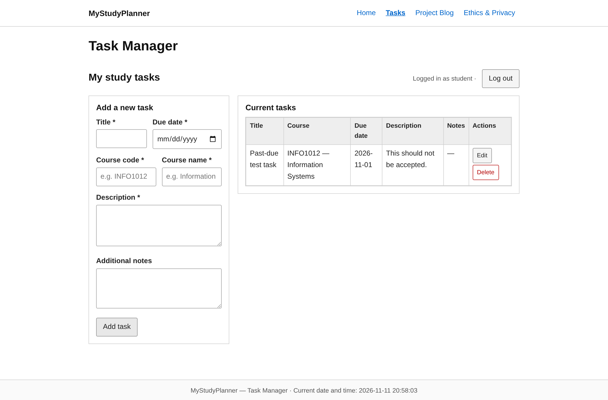
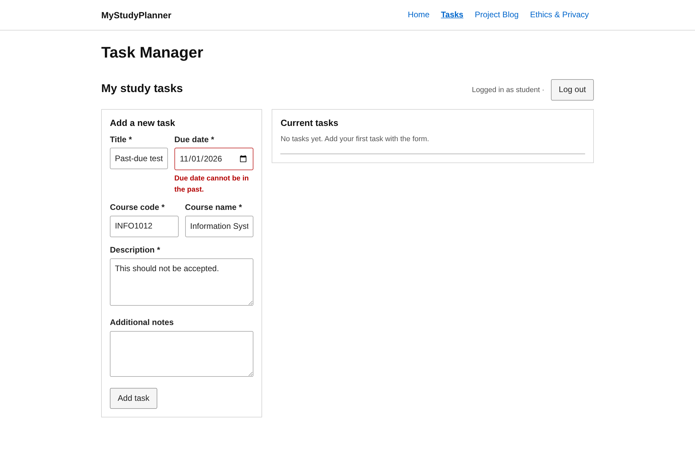
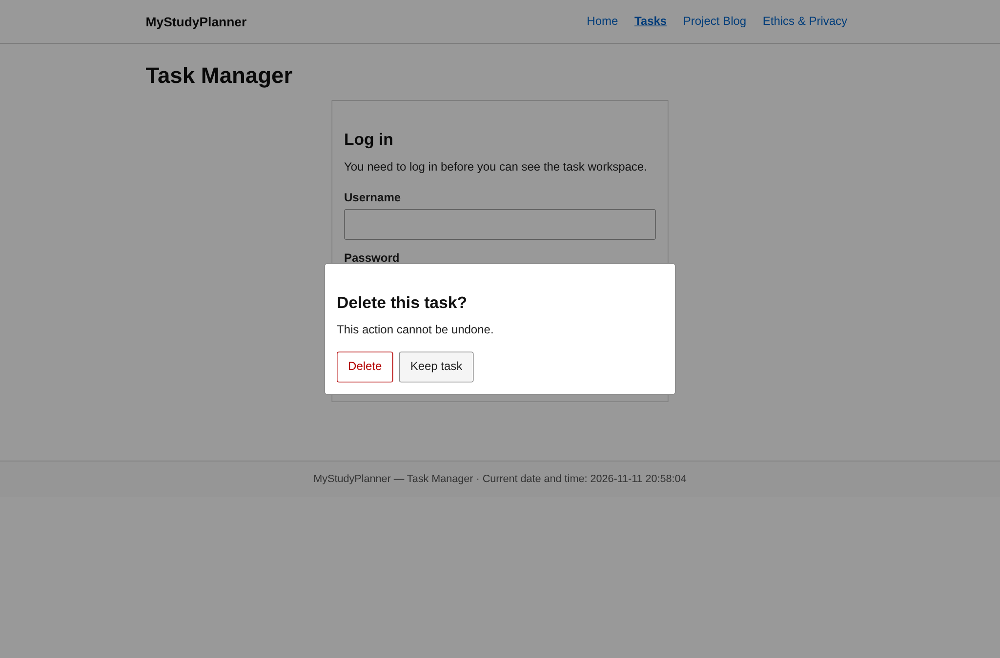
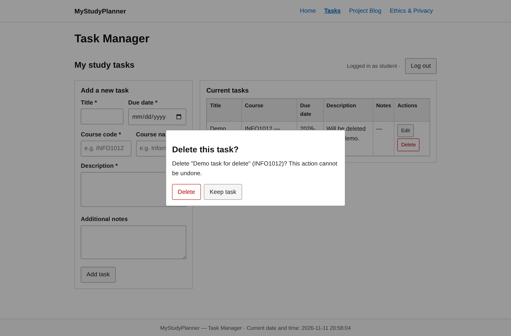
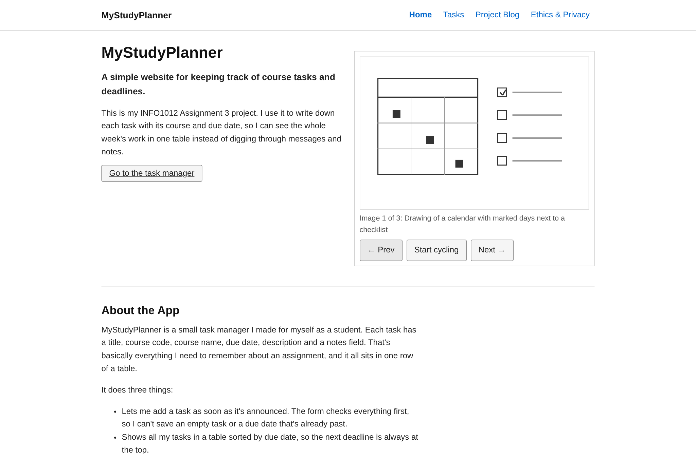
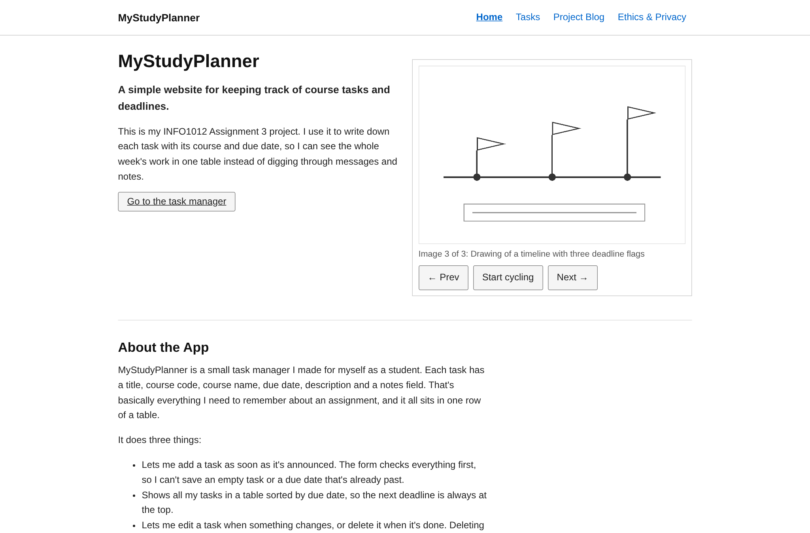

How I actually built this site: the two-week plan, the Agile stuff I used, and three bugs that annoyed me during testing. For each bug I wrote down when it happened, a screenshot of it going wrong, the broken code, the fixed code, and a screenshot of it working again.
Two-week sprint plan
Week
SDLC phase
What I planned to do
Result
Week 1 1 - 7 Nov
Planning, Design & Implementation (first part)
Decide what the app is for and who uses it; read the assignment brief and turn it into a feature list (login, add/edit/delete tasks, validation, image carousel, blog, ethics page); sketch the four pages and the fields a task needs; draw wireframes on paper; pick a simple layout and colours; build index.html, the shared stylesheet and the image carousel; draw the three images and the favicon.
Requirement checklist, a site map of the four pages, the task fields (title, course code, course name, due date, description, notes), and a home page finished with a working carousel plus a stylesheet the other pages reuse.
Week 2 8 - 14 Nov
Implementation (second part), Testing and Maintenance
Build tasks.html with login, task create/read/update/delete and validation; write the ethics page; test everything on desktop and a phone-sized window; fix the bugs found; write README/CREDITS/LICENSE and pack the final ZIP.
All four pages working with no console errors; three bugs found and fixed (see below); project documented and zipped.
Agile practices I used, and why
One-week sprints. Every week ended with something that worked (week 1: home page; week 2: the whole app). If I hadn't split it up like this I honestly would have done everything the night before the deadline.
MoSCoW prioritisation. I sorted the requirements into Must have (login, CRUD, validation, carousel, blog evidence), Should have (ethics page, mobile layout) and Could have (a dark mode). Week 2 got busy, so the dark mode got dropped instead of the testing.
Small, frequent commits. I committed after each small feature with a short message. When the delete-dialog bug showed up, this made it easy to see which change had caused it.
Testing after each increment. I tried each feature in the browser right after building it instead of leaving all testing to the end. All three bugs below were found this way, while I still remembered the code.
A simple to-do list (To do / Doing / Done) with only one thing in "Doing" at a time, so I actually finished stuff before starting the next thing.
Debugging log
All three bugs below turned up on 2026-11-11 during the week 2 testing. I re-took the evidence screenshots in the final regression run that same evening (around 20:58), so the footers in the images show that time instead of the original ones.
Bug 1 - the form accepted a due date in the past (validation)
Occurred: 2026-11-11, 18:52. While testing the validation I entered a task due 2026-11-01 (already past) and it was saved without any error.

Before: a task with a past due date is accepted and added to the table.
The validation only checked that the date could be parsed, and never compared it with today:
var parsed = new Date(data.due + 'T00:00:00');
if (isNaN(parsed.getTime())) {
showError('due', 'That is not a valid calendar date.');
ok = false;
}
// nothing compared the date with today
Resolved: 2026-11-11, 18:55. The same input is now rejected and the task is not saved.

After: the past date is rejected with "Due date cannot be in the past."
var parsed = new Date(data.due + 'T00:00:00');
if (isNaN(parsed.getTime())) {
showError('due', 'That is not a valid calendar date.');
ok = false;
} else {
var today = new Date();
today.setHours(0, 0, 0, 0);
if (parsed < today) {
showError('due', 'Due date cannot be in the past.');
ok = false;
}
}
Debugging notes. This one was my own misreading of the requirement: I thought "reject illegal dates" just meant "reject dates that can't be parsed", and forgot that a past date parses perfectly fine but is useless in a planner. The fix compares the entered date with today at midnight; both get set to 00:00 first so a task due later today still passes. References used: the MDN page for Date and the week 10 lecture slides on input validation.
Bug 2 - the delete confirmation dialog was visible on page load (interface behaviour)
Occurred: 2026-11-11, 18:44. On the first full browser test of tasks.html, the "Delete this task?" dialog was already covering the login form, and no button on the page responded to clicks.

Before: the delete dialog covers the login form before anything was clicked.
The dialog has the hidden attribute, but my own CSS forced it to be displayed anyway:
.modal-backdrop{
position:fixed; inset:0;
display:grid; /* this beats the browser's hidden{display:none} rule */
place-items:center;
z-index:50;
}
Resolved: 2026-11-11, 19:00. The dialog now stays hidden until a Delete button is clicked.

After: the dialog appears only when it should, and names the exact task.
.modal-backdrop{
position:fixed; inset:0;
display:grid;
place-items:center;
z-index:50;
}
.modal-backdrop[hidden]{ display:none; } /* make the hidden attribute work again */
Debugging notes. Since every click was dead, I guessed something invisible was sitting on top of the page, and the browser inspector showed it was the modal backdrop that was supposed to be hidden. The cause is a CSS rule I didn't know about: the hidden attribute only means display:none in the browser's default stylesheet, and my own display:grid quietly overrides that. The fix adds an explicit rule for [hidden]. References used: the MDN page on the hidden attribute and a Stack Overflow question about hidden versus display.
Bug 3 - "Prev" on the first carousel image did nothing (interface behaviour)
Occurred: 2026-11-11, 18:49. On the home page, pressing Prev while image 1 was showing left the carousel on image 1 and stopped the auto-cycling; the console showed a TypeError.

Before: Prev on image 1 changes nothing - it still says "Image 1 of 3".
function show(n){
i = n % slides.length; // in JavaScript, -1 % 3 is -1, not 2
img.src = slides[i].src; // slides[-1] is undefined -> TypeError
img.alt = slides[i].alt;
status.textContent = 'Image ' + (i+1) + ' of ' + slides.length;
}
Resolved: 2026-11-11, 18:50. Prev on the first image now wraps around to the last image.

After: Prev from image 1 wraps to "Image 3 of 3".
i = (n + slides.length) % slides.length; // always between 0 and length-1, even for n = -1
Debugging notes. The console error TypeError: Cannot read properties of undefined (reading 'src') pointed straight at the line. The cause is that JavaScript's % operator keeps the sign of the left-hand number, so -1 % 3 is -1, which I did not expect coming from other languages. Adding the array length before the % keeps the index in range. Reference used: the MDN page on the remainder operator.